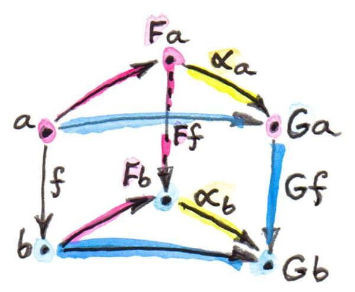
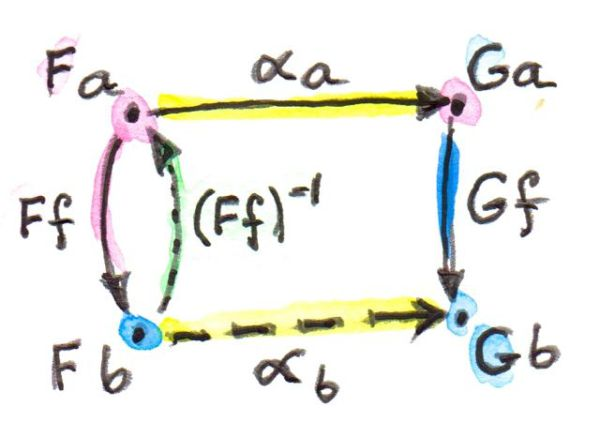
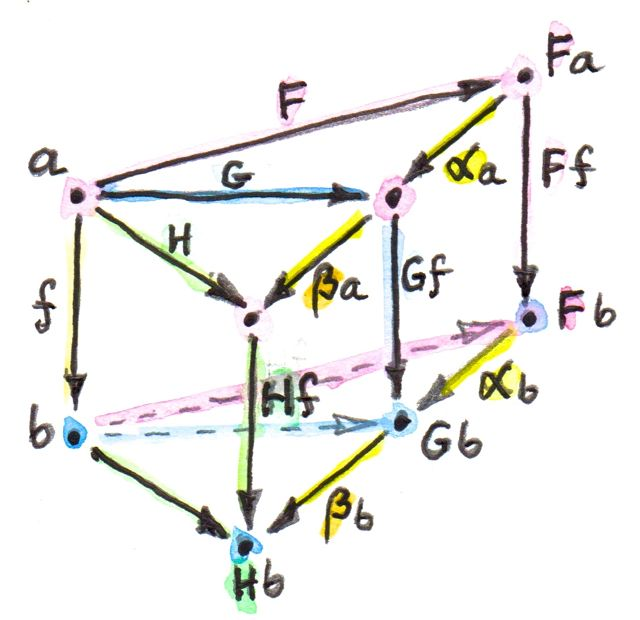
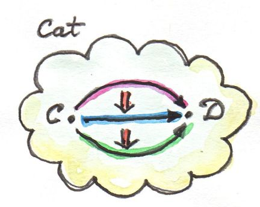
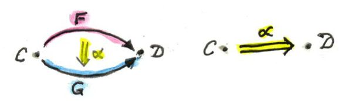

notes
Natural Transformations
Natural transformation maps fucntors to functors by picking for every object a in the source category a morphism in the target category to do the mapping.
αa = Fa → Ga
The mapping must also preserve the natuarality condition
G⨍ ∘ αa = αb ∘ F⨍
where
⨍ = α → β
F⨍ = Fa → Fb
G⨍ = Ga → Gb
αa = Fa → Ga
αb = Fb → Gb
αa = Fa → Ga
The mapping must also preserve the natuarality condition
G⨍ ∘ αa = αb ∘ F⨍
where
⨍ = α → β
F⨍ = Fa → Fb
G⨍ = Ga → Gb
αa = Fa → Ga
αb = Fb → Gb

Its stringent. If F⨍ is invertible then αb is determined in terms of αa
αb = (G⨍) ∘ αa ∘ (F⨍) − 1
αb = (G⨍) ∘ αa ∘ (F⨍) − 1

Viewed componentwise could say:
- maps objects to morphisms
- maps morphisms to comuting squares

Polymorphic Functions
With parametric polymorphism as in Haskell any function between functors polymorphic in the element is a natural transformation.
-- Always a natural transformation
alpha :: F a -> G a
-- naturality always holds
(fmap @ G) f . alpha = alpha . (fmap @ F) fThis is due to *“theoroms for free”**
Even functions to values can be seen as natural transformations
-- Normal version
length :: [a] -> Int
-- Version cast recast as natural transformation
lengthF :: [a] -> Const Int aContravariant Functors
- Equavilent to covariant functors in the opposite category
- Not natural transformations in Hask
They do satisfy the opposite naturailty condition in Hask
Functor Category
- One category of functors for each pair of categories C an D
- Objects are functors from C to D
- Morphism are natural transformations between the functors αa = Fa → Fb βa = Ga → Ha βa ∘ αa = Fa → Ha (β ⋅ α)a = βa ∘ αa

- composition of natural transformation is associative because there component morphisms are asociative.
- Naturality holds for the composition H⨍ ∘ (β ⋅ α)a = (β ⋅ α)b ∘ F⨍ 
- Indentity natural transformation 1F whose components are the identity morphisms. idFa = Fa → Fa
- Called [C, D] or DC
Vertical composition
- composition used above known as vertical composition
- composition of natural transformation within the same category
- β ⋅ α

2-Categories
- Cat category of small categories
- Hom-set in Cat set of functors
- Functors form a category
- In Cat as 2-category
- Objects: Small categories
- 1-morphisms: Functors between categories
- 2-morphisms: Natural transformations between Functors (morphisms of morphisms)
- Hom-category DC instead of Hom-set between categories C and D
- Regular functor compistion F from DC G from ED G ∘ F in EC
- Also composition inside each Hom-category, vertical composition of natural transformations 
Horizontal Composition
- 2 Functors 1-morhpisms in Cat F = C → D G = D → E
- their composition G ∘ F = C → E
- 2 Natural transformations α and β acting on F and $G α = F → F′ β = G → G′ we can’t apply vertical composition to α and β
- Can we construct natural transformation between G ∘ F and G′ ∘ F′ ? Yes.

- a splits into Fa and F′a
- αa connects Fa and F′a αa = Fa → F′a
- two objects split further into 4 objects G(Fa), G′(Fa), G(F′a), G′(F′a)
- 4 Morhpisms forming a square
- 2 from natural transfrom β βFa = G(Fa) → G′(Fa) βF′a = G(F′a) → G′(F′a)
- other 2 are images of α under G and G′ Gαa = G(Fa) → G(F′a) G′αa = G′(Fa) → G′(F′a)
- Need to find path G(Fa) → G′(F′a) mapping G ∘ F → G′ ∘ F′
- there are two paths G′αa ∘ βFa βF′a ∘ Gαa
- but they are equal because of the naturality condition of β
- This is called the horizontal composition of α and β β ∘ α = G ∘ F → G′ ∘ F′
- ?? Natural transofrmations collapse all equivelant functors between categories
CandDand horizontal compisition is the composition of these collapsed functors ??  - Interchage law for horizontal composition (β′ ⋅ α′) ∘ (β ⋅ α) = (β′ ∘ β) ⋅ (α′ ∘ α)